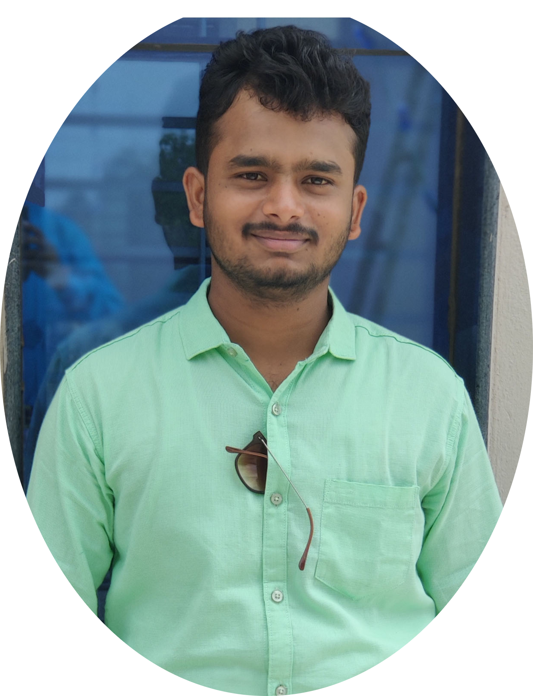

|  |
VINAYAK NIMBARAGISoftware Engineer Email: vinayakakvise@gmail.com Contact : +91 7829949093 I ❤ coffee |
Looking for a challenging career which demands the best of my technical knowledge, skill and creative thinking resulting in overall development of the organization and myself.
| Examination/Qualification | Board/University | School/College | Year of Passing | CGPA/Percentage |
|---|---|---|---|---|
| Bachelor Of Engineering[ISE] b | Visvesvaraya Technological University | Acharya Institute of Technology, Bangalore | 2020 | 7.85 |
| PUC | Karnataka PreUniversity Board | K L E’s S C P PU College, Mahalingapur | 2016 | 77.66% |
| SSLC | Karnataka State Board of Secondary Education | K L E’s S C P High College, Mahalingapur | 2014 | 84.24% |
| Father’s Name: | Prakash Nimbaragi |
| Date of Birth: | 06-09-1997 |
| Permanent Address: | Javali Bazar Ambi Galli Mahalingapur587312. |
| Languages Known: | English, Hindi, Kannada |